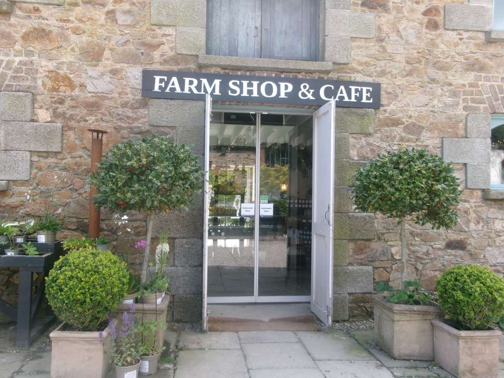
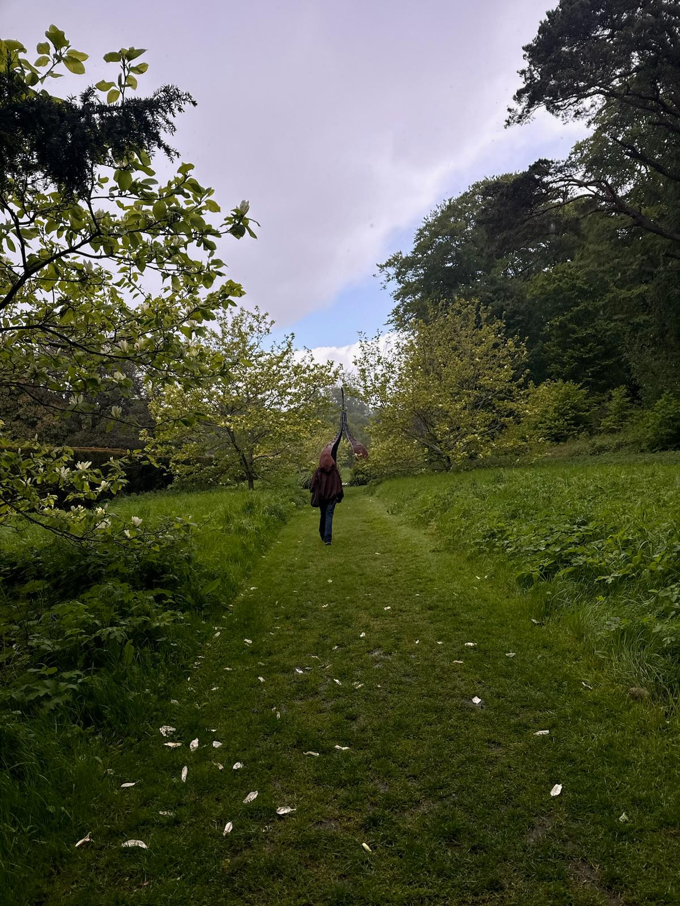
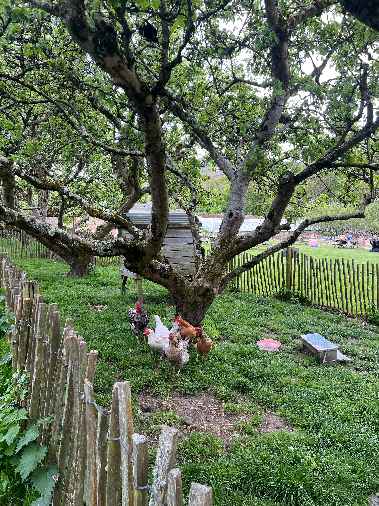
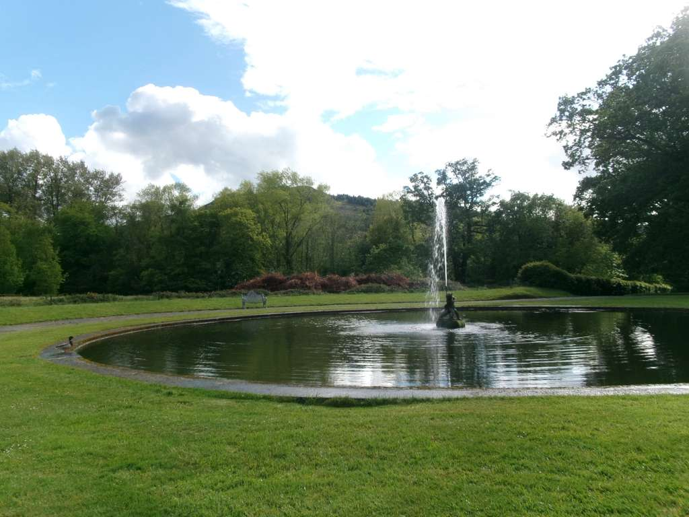
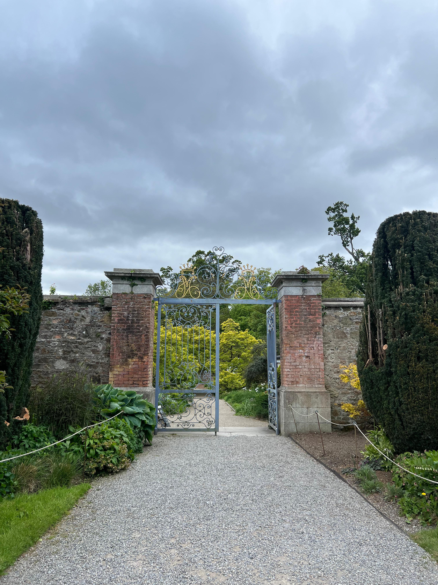
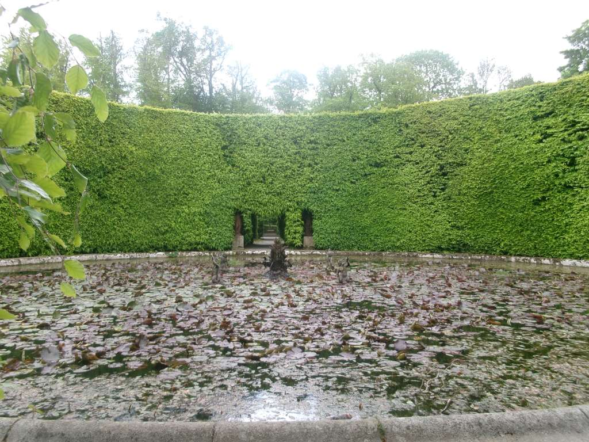
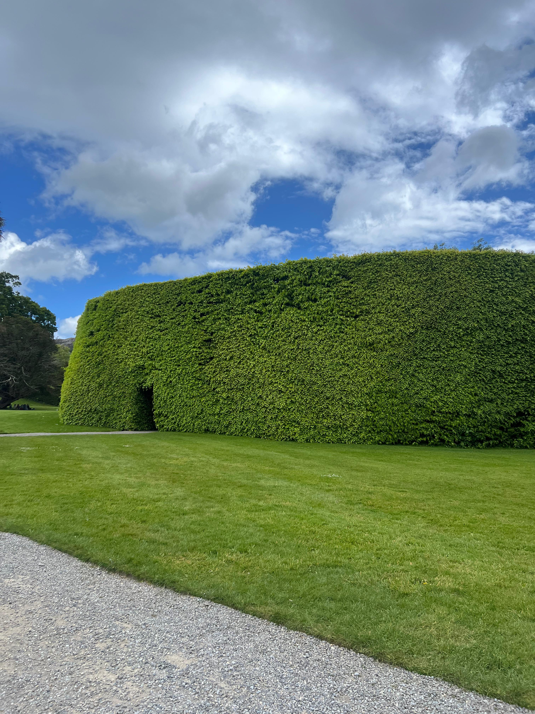
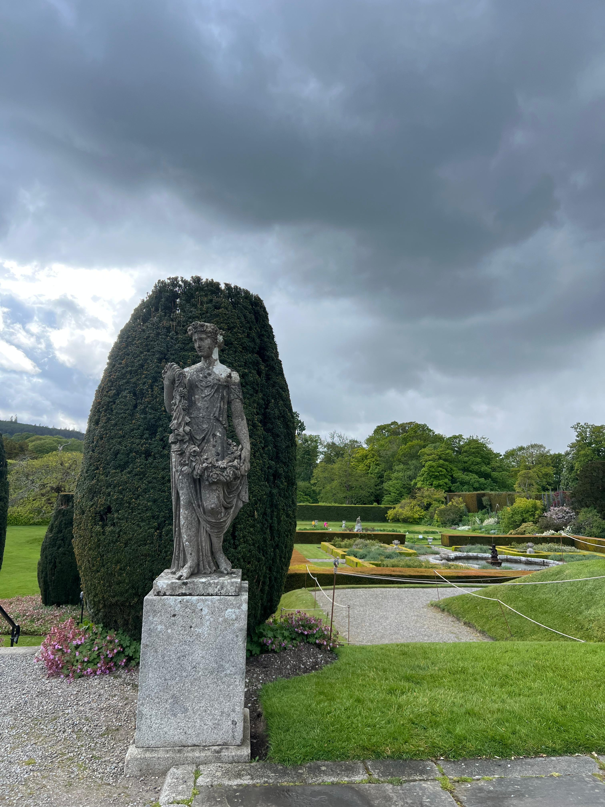
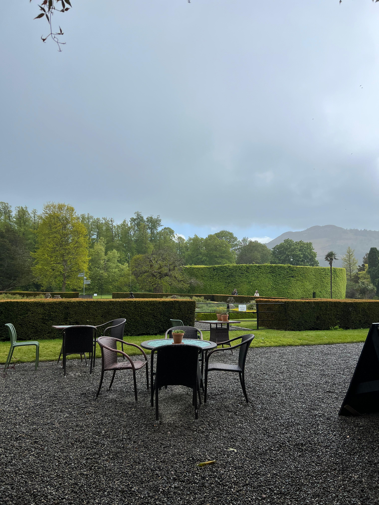

First Impressions
Getting into the entrance of the Kilruddery Tour is kind of hidden, and hard to see. They have "secret" paths through the forest to get there and its a gated community.
Things I Noticed
- The amount of land acres belonged to the Kilruddery Family
- The family still lives in the castle
- The house has been used for movies, events, weddings
- Gardens shaped very intricately
What I Recommend
Similar to my travel to Malahide, this is a castle and garden journey that I recommend to anyone into historical shows, history, and architecture. There is a student discount, and there are plenty of things to do outside of the paid experience. There's a pizza shop, cafe, and farmers shop once you get into the entrance, all in the same area.
Photo Gallery









